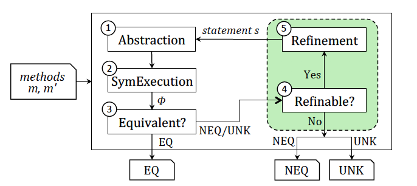

ARDiff: Scaling Program Equivalence Checking via Iterative Abstraction and Refinement of Common Code
Equivalence checking is a powerful technique used to formally prove that two representations of a program exhibit the same behavior. It helps determine the correctness of compiler optimizations or code refactoring. One popular approach to establishing equivalence of software-based systems is symbolic execution – a static program analysis technique that expresses program behaviors in terms of symbolic input variables. Yet, due to complex programming constructs, such as loops and non-linear arithmetic, scaling symbolic execution remains a challenge.
In this paper, we propose an approach for scaling symbolic execution-based equivalence checking for cases that consider two subsequent versions of a program. Like earlier work, our approach leverages the fact that program versions are largely similar and prunes parts of the code that are common between versions, reducing the scope of the analysis. Unlike earlier work, our approach uses a set of heuristics to determine which parts of the code benefit from pruning and which do not. We devise a realistic equivalence checking benchmark, including complex math functions and loops, and evaluate the effectiveness and efficiency of our technique on this benchmark. The results show that our approach outperforms existing method-level equivalence checking techniques: it is able to solve 86% of all equivalent and 53% of non-equivalent cases in our benchmark, compared with 47% and 69% for equivalent and 38% to 52% for non-equivalent cases in related work.

This website contains artifacts used for experimental evaluation described in the paper.